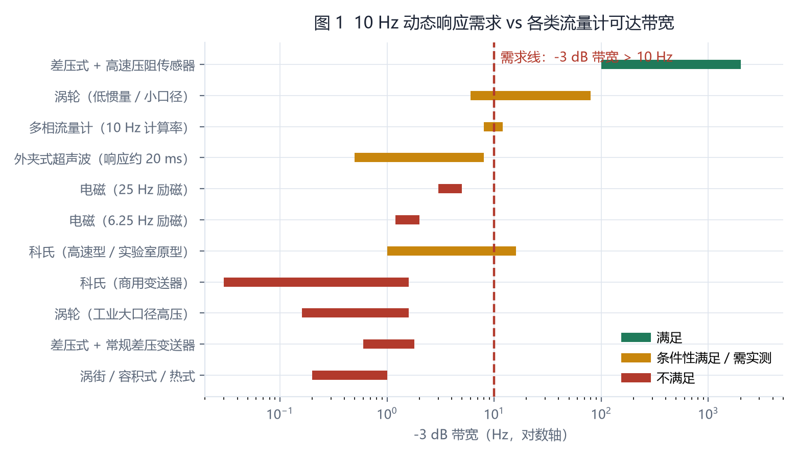
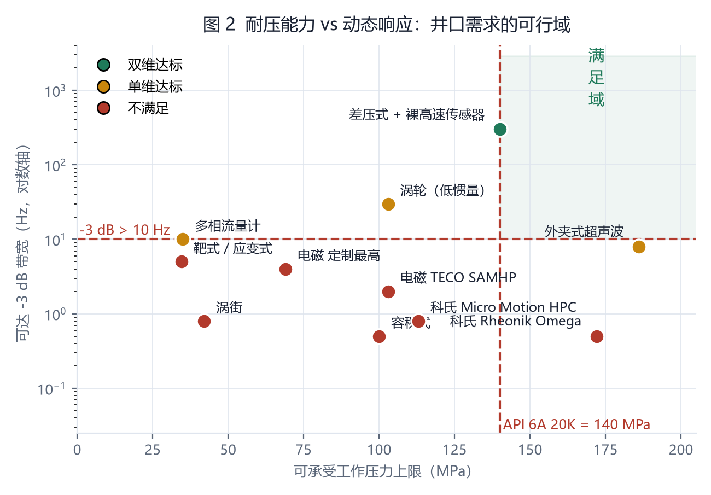
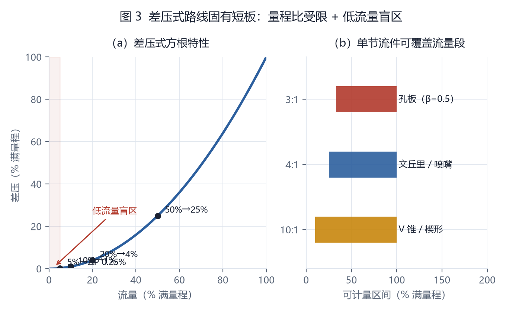
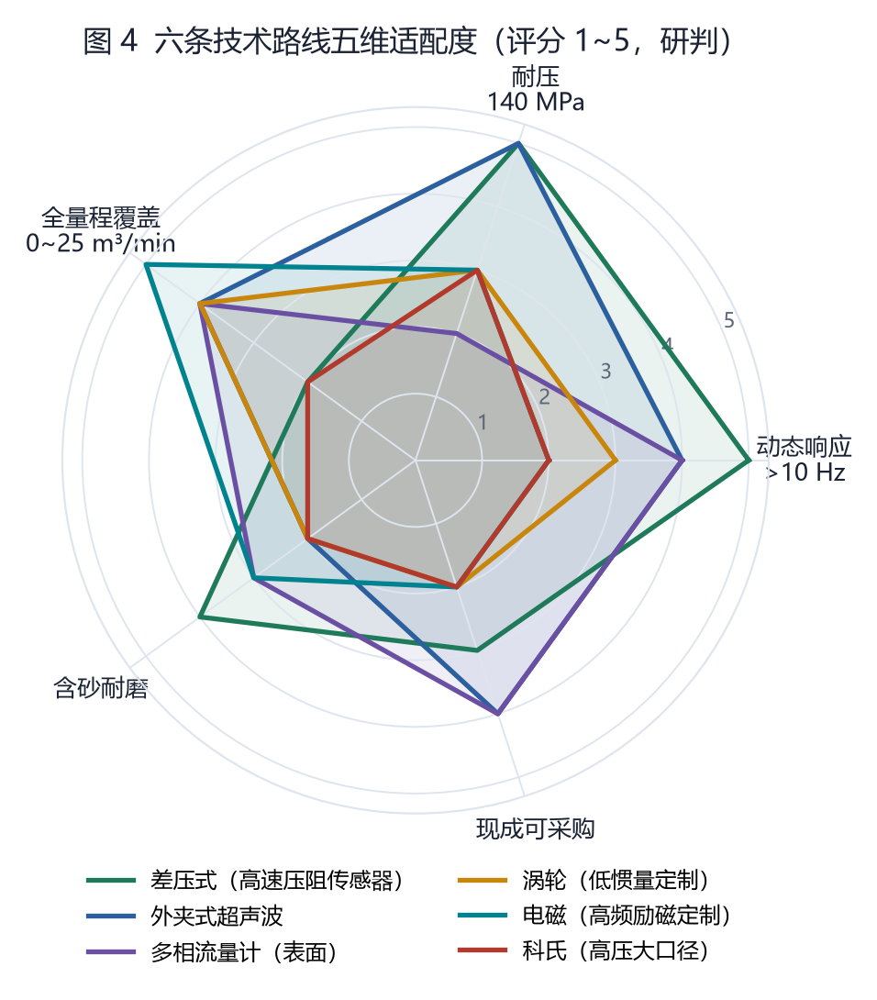
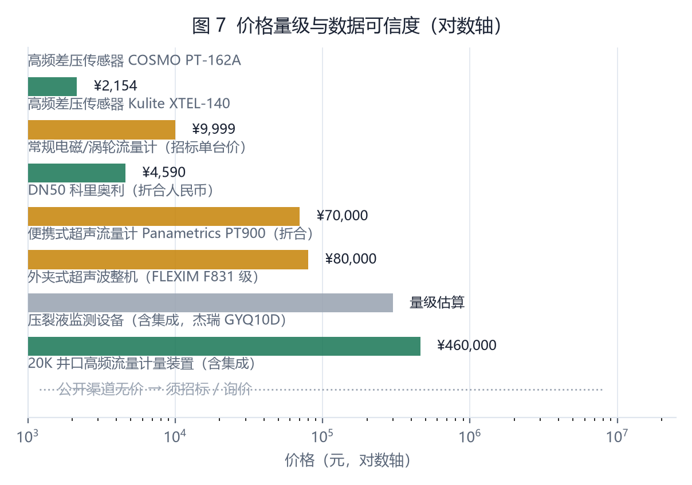
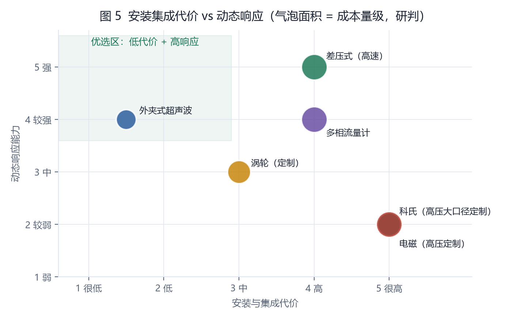
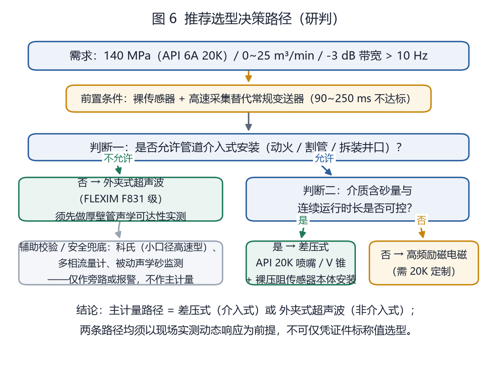

含砂磨蚀
电极、衬里、轴承、测量管均受损。差压节流件适应性较好，但取压口须防堵并预留冲洗。
基本原理 · 现有产品 · 场景适应性 · 价格与安装代价
压裂现场的关键变化以数十至数百毫秒为尺度发生。常规 1–10 Hz 采集只能看到平均值，难以恢复脉动波形。
350 rpm 三缸柱塞泵的典型基频。
减震后的三缸泵管汇脉动幅值。
本体带宽应高于此阈值。

一阶时间常数 τ 才是可横向比较的口径。τ=16 ms 对应约 9.95 Hz。
| 口径 | 能否直接判断 10 Hz |
|---|---|
| 时间常数 τ | 可以 |
| 5τ 阶跃响应 | 需换算 |
| 更新率 / 输出频率 | 不能 |
| 10%→90% 上升时间 | 系数不同 |
沟通要求：厂商须写明响应时间定义，并给出含支撑剂介质下的实测阶跃曲线。


探头置于管外，不承受 140 MPa 内压。它的决胜条件不是耐压，而是实际井口厚壁锻钢管和含砂介质下的声学可达性。
FLEXIM F831 可选响应时间。换算带宽约 7.96 Hz，未严格达到 10 Hz 门槛。
无需割管或动火，安装与井口改造代价最低。
30–60 mm 厚壁、钢–液界面与高固相散射均可能降低信噪比。
必须在真实井口管段和实际介质条件下完成声学测试。
介入式仪表中，差压节流件与小口径科氏能触及 140 MPa。前者受量程比限制，后者无法承担 25 m³/min。
供应链判断：井口、液力端、压裂泵与混砂装备已有成熟供给，“井口高频响应流量计”本身仍倾向进口或定制开发。
| 原理 / 代表型号 | 上限 | 140 MPa |
|---|---|---|
| 差压 / V-Cone | 约 138 MPa | 基本达到 |
| 科氏 / Rheonik Omega | 约 172 MPa | 小口径 |
| 电磁 / TECO SAMHP | 约 103 MPa | 不足 |
| 涡轮 / Hoffer Wing Nut | 约 103 MPa | 不足 |
| 管段超声 / OPTISONIC 4400 | 约 49 MPa | 不足 |
| 外夹式超声 | 不承受内压 | 另验声学 |

电极、衬里、轴承、测量管均受损。差压节流件适应性较好，但取压口须防堵并预留冲洗。
140 MPa 管件壁厚通常 30–60 mm。外夹式超声必须先验证信号强度和信噪比。
过程监测未检索到强制 CMC 要求；若数据进入结算或科研结论，应提前与计量主管部门确认。
差压通常需要 5–10D 上游直管段；涡轮需要 10–20D。测点应远离泵源或布置在稳定段。

仪表采购价只是总投入的一部分。140 MPa 级方案尚无公开完整价格。

外夹式超声波位于低安装代价、高响应的优选区；差压式是高代价、高响应方案。

API 20K 喷嘴或 V 锥，配高频压阻传感器本体安装与高速采集。重点解决全量程覆盖与取压防堵。
先完成厚壁锻钢管、含砂介质条件下的声学测试。20 ms 配置严格口径下仍需确认。
涡轮、科氏、多相流量计与被动声学砂监测不宜作为井口主计量方案。